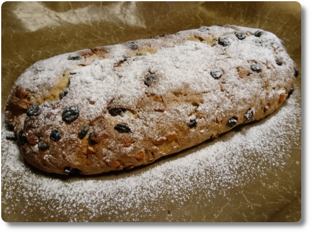
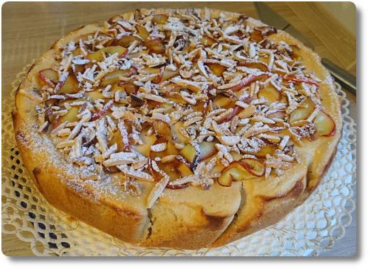

Weihnachtsbäckerei 2019
Dieses Jahr haben wir das erste Mal einen (Quark-)Stollen gebacken. Das Rezept für diesen haben wir aus einem Backbuch meiner Mutter. Und das haben wir auch nur ausgewählt, weil es wirklich ganz einfach war, man brauchte nur alle Zutaten zusammenschütten und kneten (lassen). Das Ergebnis hat uns echt überrascht, der Stollen war richtig gut anzuschauen und drinnen war er schön saftig. Allerdings ist er nicht so gut aufgegangen, wie ein gekaufter. Aber für den ersten Versuch: Sehr zufriedenstellend. Er hat nur wenige Tage in unserer Wohnung überlebt...

Außerdem, und darauf bin ich besonders Stolz, haben wir Anfang Dezember diesen ultraleckeren Bratapfel-Käsekuchen gebacken. Hmmiammm!!! Ich hatte Lust auf einen Apfelkuchen, meine Frau war aber schon in Weihnachtsstimmung. Daher kam uns dieses Kuchenrezept gerade recht. In der Quarkfüllung ist Karamellsirup und Zimt drinne, und drunter liegen vorgebackene Elstar-Äpfel. Oben drauf krönen den Kuchen geröstete Mandeln, gebratene Apfelscheibchen und Puderzucker. Himmlisch! 😋

Wer eines der Rezepte haben will kann mich wie immer gerne anschreiben. Außerdem haben wir auch Plätzchen gebacken, wie das Foto auf dem Blogpost meiner besseren Hälfte zeigt.